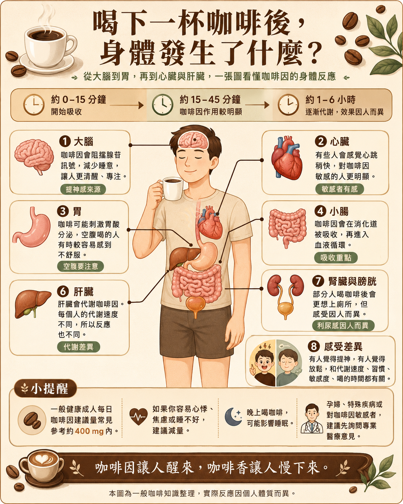
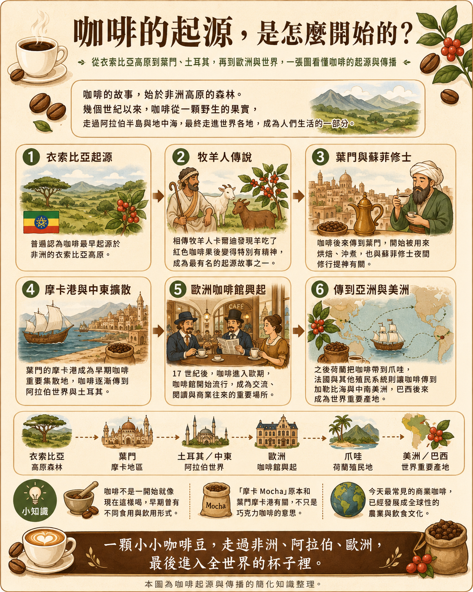
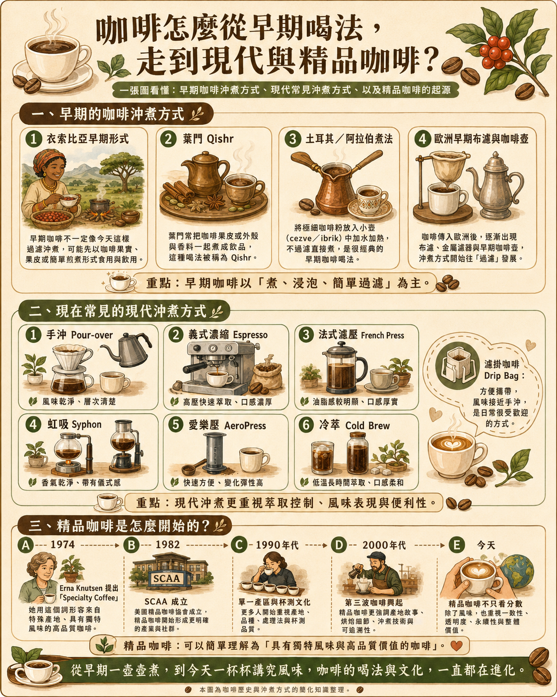
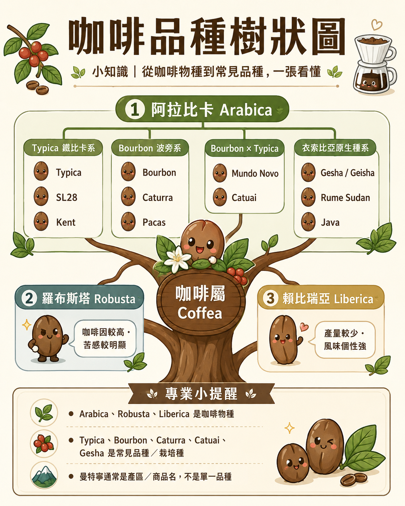

為什麼咖啡豆要手工挑豆？
咖啡豆手工挑豆是為了在烘焙前挑除瑕疵豆、破裂豆、蟲蛀豆與異物。這些豆子可能帶來霉味、臭酸、土味與雜苦，先挑掉能讓咖啡喝起來更乾淨、順口、穩定。
COFFEE KNOWLEDGE
手挑豆、瑕疵豆、咖啡起源、沖煮演進、身體反應與品種樹狀圖，集中放在知識分頁。
AEO ANSWERS
咖啡豆手工挑豆是為了在烘焙前挑除瑕疵豆、破裂豆、蟲蛀豆與異物。這些豆子可能帶來霉味、臭酸、土味與雜苦，先挑掉能讓咖啡喝起來更乾淨、順口、穩定。
瑕疵豆會影響咖啡風味。黑豆、發霉豆、蟲蛀豆或破裂豆在烘焙時容易造成不均勻風味，杯中可能出現霉味、雜苦、臭酸或土味，因此挑豆是提升乾淨度的重要步驟。
濾掛咖啡適合想快速喝到現沖咖啡的人，也適合辦公室、出差、露營與送禮。它不需要磨豆機或專業器具，只要熱水、杯子與濾掛包，就能在 3 分鐘內完成一杯咖啡。
手挑咖啡的差異在於烘焙前多了人工挑選步驟。一般濾掛咖啡不一定會逐批挑除瑕疵豆；手挑後再烘焙，可降低雜味來源，讓濾掛咖啡更適合日常飲用與送禮。
常見咖啡瑕疵豆包含黑豆、發霉豆、蟲蛀豆、破裂豆、貝殼豆與異物。這些豆子在烘焙後可能放大雜味，因此手工挑豆的目的就是先把不該進杯子的豆子移除。
濾掛咖啡很適合企業禮、活動贈品與婚禮小物，因為它不需要器具、保存方便、使用門檻低。若搭配客製貼標或禮盒，能把品牌訊息做成可被喝掉的實用禮品。

咖啡因、腺苷、大腦、心臟、胃與肝臟的基本反應。

從衣索比亞、葉門、土耳其，到歐洲與世界。

理解咖啡從煮、浸泡、過濾，到現代精品咖啡的演進。

阿拉比卡、羅布斯塔、賴比瑞亞與常見品種特色。